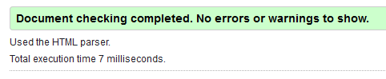

How to Use
You input your equation on the left into the Left Input box, then your right equation into the Right Input box. You then click the Submit button. The Status bar should tell you whether your left and right inputs are equal or not. It is important to note that if numbers/shapes are stacked too high, the scale will not count them, try and keep your numbers/shapes level on the scale as much as you can.
Example Left Input:
Example Right Input:
Basic Function
You can click and drag the shapes and your fuctions around the Math Balance area. The balance will tilt to whichever side has the highest apparent or literal value, although it may take a few seconds for the scale to update, so be patient. Click the mouse again to release the object your holding.
Technicalities
Addition should be written with a + sign (2 plus 2 should be written as 2+2)
Subtraction should be written with a - sign (5 minus 3 should be written as 5-3)
Multiplication should be written with no sign or a * sign, no sign if it's multiplaction between a constant and a variable, a * sign if between two constants. (4 multiplied by 3 should be written as 4*3, and 4 multiplied by x should be written as 4x)
Division should be written with a / sign (6 divided by 2 should be written as 6/2)
Exponents should be written with a ^ sign (x to the power of 5 should be written as x^5), however, our current system does not support constants as the base (ex. 4^2).
Fractions should be written with a / sign (A fraction of 3 over 4 should be written as 3/4)
Clear Button
The clear button will clear all work made in the math balance, so be careful you don't accidentally clear all your equations
Switch Shapes and Text
This button switches the text into geometric shapes and shapes into their original, representative numbers/equations. Shapes will be of representative sizes to each other, meaning that a 5 and a 10 put into the scale and switched into shapes, the "10" shape will be double the size of the "5" shape. To prevent extremely large shapes occuring, all shapes will be scaled down to prevent this, shapes will still be of representative sizes.
*NOTE* Numbers larger than 1 will not be switched
Keyboard Shortcuts
There are keyboard shortcuts that advanced users can use for optimized use while on the scale site these keyboard shortcuts and what they do are detailed here:
- S - Switch the shapes and text
- D - Switch between dark and light mode
- C - Clear the canvas
- Any number key 1-9 + ENTER - Enters that number into the scale area
- Any number key 1-6 + SHIFT + ENTER - Enters that number as a fraction into the scale area
Helpful Tip: You can hover over most elements on the Math Balance page and it will tell you what it does. If you have any other questions, please email us at Daniel's Email or at Luke's Email
